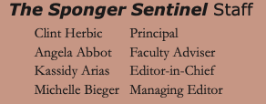

Writing
I am active fiction and non-fiction writer. For my non-fiction, I am looking to specialise in science or environmental journalism, so if you are interested in a commission, or you have open submissions for your publication, please do contact me below! I will be querying two fictional works in 2025 and 2026. If you are a literary agent and have stumbled upon this page, please do contact me.
Throughout my time in high school, I was always either staff writer or editor at the school paper (see below for a snippet of the cover of The Sponger Sentinel, where I was managing editor, revelling in graphic design and editing staff pieces!). I learned the fundamentals of journalism, and the history of it throughout the United States and Europe--how it changes the shape of democracy and informs the decisions of everyone from everyday merchant to highest ranking politician. I am still enamoured with journalism, and the written word in general.
Journalistic writing or blog pieces
I am currently writing a non-fiction book proposal, which I am expecting to submit in 2024. The following are pieces I have written recently:
- 3DegreesReading, a book club and associated social media outreach project regarding the climate crisis and associated issues
- University of Exeter Global Systems Institute blog post about The Territory event I organised (see Speaker Events tab above)
- University of Exeter Global Systems Institute blog post about science centres seminar
Creative writing
I have been writing poems since I've been three years old. The following are some pieces I have publicised recently. I am looking to query and submit two seperate pieces of fiction in the next few years.
- Heatwave, second place winner of the University of Exeter Sustainability Student Haiku Competition
- My Faith in a God, published in the zine Until the Stars Burn Out
- Work I have created through workshops with the University of Exeter has formed part of the We Are the Possible Anthology, part of the initiative 12 Poems for 12 Days of COP28. The anthology can be found at the University of Exeter, and you can find my specific poem here.